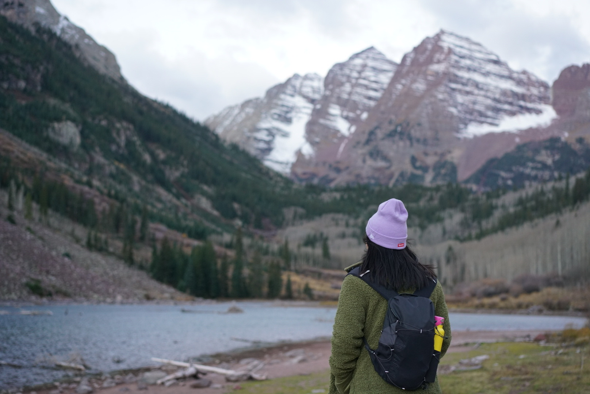
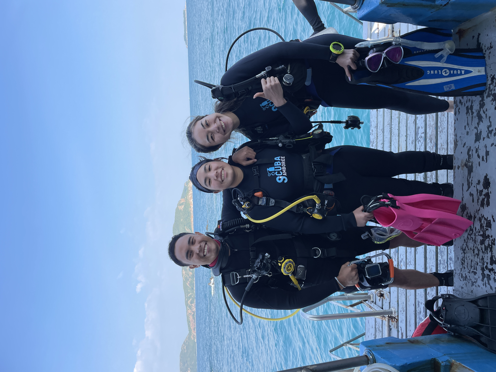

 My name is Bambi Nandabhiwat and I am from Bangkok, Thailand. I previously went to boarding school in Massachusetts since the age of 12. I first went to Fay School in Southborough, MA then continued my highschool career at Northfield Mount Hermon School in Gill, MA. This aspect of my life has challenged my independence at a young age. It has also given me a myriad of opportunities I wouldn't have acquired if I were to prolong my education in Thailand. This facet has stemmed my intellectual capacity to explore new potentials.
I was brought up in an environment were my brothers attended Northeastern
and BU at that time so I had a grasp on what Boston was like. I intended
to study business and wanted to go to a school where the community is
tight and the Thai student body is close knit. Moreover, I also was
interested in entrepreneurship and I believe that Babson College will
grant me the opportunity to push boundaries in learning while contributing to
philanthropic initiatives that will further the common good of society
through the business lens. This equipped education will provide me with
innovative solutions to harness challenges.
 In my leisure time I enjoy all sorts of activities whether it is playing sports, golfing, traveling, scuba-diving, appreciating architecture, or spending time with people I love. I played soccer, basketball, track, softball for my highschool team and now I've recently picked up golf. Because I live in Thailand, the weather is accommodating all year round. I cherish the ability to get out there and walk in the sun while catching up with my friends and family members.
Coming to boarding school at a young age also encouraged my self-resilience to step out of my comfort zone and participate in various team sports. Soccer played a huge role in my life growing up as well as basketball, swimming, tennis, softball, and track and field. The rush of ecstasy fills me walking out of every workout, practice, and game. I've made mistakes, learned from them, and picked myself up. The invaluable lessons I'm able to gain on and off the fields have shaped me to be resilient and persistent in my everyday life.
I've also developed interest in scuba-diving with Padi and exploring life underwater. My passion and interest in scuba-diving stemmed from my brother who is a rescue diver and now working towards his dive-masters qualification. Hopefully one day I can develop my skills to his levels! In addition to these I also relish traveling and hiking. A highlight from last semester would be going to Aspen and Vail, Colorado for a hiking trip with my AKPsi friends in the fall. A dream destination of mine are the Patagonias and Machu Picchu, Peru. Other places I would like to explore would be the Galapagos as well especially after developing interest in scuba diving. For me traveling allows me to open my hearts and mind to new cultures and traditions. Moreover, solidify my appreciate for the arts through architecture. Growing up I've always wanted to be an architect. I've always had a rush of curiousness and find myself losing time when coming across houses. Hopefully I will be able to check this bucket list off by the time I graduate Babson.
Bambi Nandabhiwat
Web Technologies
GitHub
Profile
Page
My Email is
nnandabhiwat1@babson.edu
feel free to reach out!